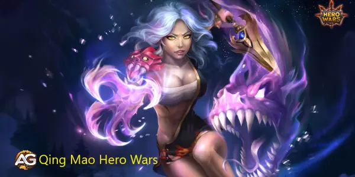
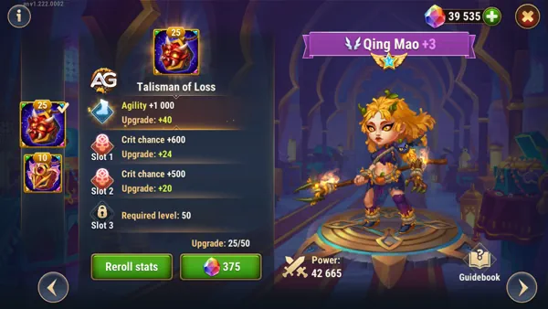
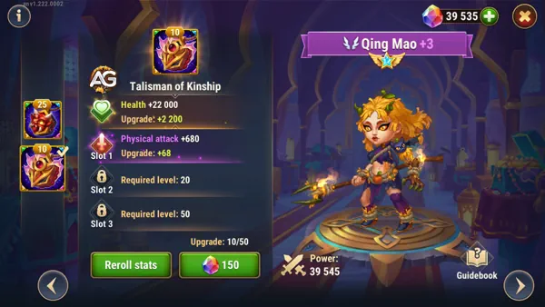
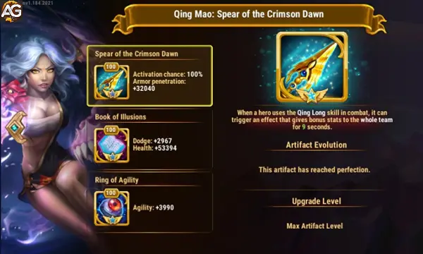

Dominando Qing Mao em Hero Wars Alliance: Um Guia Completo
- Por: Alexandre Domingos. .
Qing Mao sempre foi uma heroína formidável em Hero Wars Alliance, celebrada por seu dano crítico excepcional e sua habilidade de destruir a armadura dos inimigos. No entanto, com sua recente reformulação, ela se transformou em uma guerreira ainda mais dinâmica e versátil. Essas mudanças aprimoraram seu conjunto de habilidades, tornando-a um recurso vital tanto para estratégias ofensivas quanto defensivas, capaz de mudar o rumo de qualquer batalha com seu dano aprimorado e utilidade.
Equipada com os talismãs certos e posicionada estrategicamente em uma equipe, Qing Mao torna-se uma força imparável. Suas habilidades aprimoradas permitem que ela se destaque não apenas na destruição de inimigos com armaduras pesadas, mas também no suporte aos aliados através de efeitos de roubo de armadura. Seja em cenários PvP ou PvE, a reformulada Qing Mao é uma heroína revolucionária, pronta para liderar sua equipe à vitória como nunca antes!
Revelando Qing Mao: Visão Geral do Personagem e Tier List Geral
| Estatísticas Principais de Qing Mao |
| Posição: Linha de Frente |
| Como conseguir: Eventos, baú heroico, loja de terralém |
| Função Principal: Lanceiro |
| Classe de Glifo: Guerreiro |
| Estatísticas principal: Agilidade |
| Facção: Honra |
| Tier List 2025 |
| Tier List Geral: S+ |
| Tier List de Hidra: C |

Dicas Detalhadas para Cada Habilidade Reformulada
1. Qing Long (Habilidade Cinza)
Descrição: Qing Mao invoca um espírito de dragão que atinge três inimigos próximos, causando dano físico com cada golpe. Cada ataque incendeia os inimigos por 5 segundos, empurrando-os para trás e causando dano contínuo de queimadura.
- Dano por golpe: 35% do Ataque Físico + 75 × Nível
- Dano de queimadura por segundo: Ataque Físico + 75 × Nível
Impacto na Batalha:
Essa habilidade é poderosa para causar dano em área e controlar o movimento dos inimigos. A combinação de dano imediato e queimadura contínua garante que os inimigos sofram punição constante, sendo particularmente eficaz contra grupos de inimigos. Esta habilidade enfraquece Tanques na linha de frente e pressiona heróis frágeis na retaguarda simultaneamente. Além disso, o empurrão adiciona controle de multidão, dando à sua equipe mais espaço para reposicionar ou lançar ataques de acompanhamento.
2. Lança da Aurora (Habilidade Verde)
Descrição: Qing Mao cega os inimigos mais próximos por 4 segundos, fazendo com que seus ataques errem, e causa dano físico.
- Dano: 40% do Ataque Físico + 30 × Nível
Impacto na Batalha:
Essa habilidade é transformadora para interromper heróis de alto dano, como atiradores ou magos. O efeito de cegueira neutraliza temporariamente o DPS do inimigo, dando à sua equipe uma vantagem significativa de sobrevivência. O dano adicional garante que, mesmo enquanto controla o inimigo, Qing Mao contribua ofensivamente. Use essa habilidade no início da batalha para minimizar o impacto inicial do dano explosivo inimigo, especialmente em confrontos PvP onde o tempo é crucial.
3. Garra do Dragão (Habilidade Azul)
Descrição: Qing Mao causa dano físico ao inimigo mais próximo com base na vida atual dele. Essa habilidade é particularmente eficaz contra alvos com alta vida, pois o dano escala com a vida do inimigo.
- Dano: 20% da vida atual do alvo
Impacto na Batalha:
Essa habilidade faz de Qing Mao uma assassina natural de Tanques. Contra inimigos com alta vida, como Astaroth ou Rufus, Qing Mao pode reduzir significativamente a vida deles no início de uma luta, quebrando suas defesas rapidamente. Essa habilidade garante que os Tanques inimigos não sejam mais um obstáculo intransponível, abrindo caminho para sua equipe atingir causadores de dano e suportes na retaguarda.
4. Coração Aberto (Habilidade Roxa)
Descrição: Toda vez que Qing Mao atinge com um ataque físico, ela rouba uma porção da armadura do alvo, enfraquecendo suas defesas. Para cada aliado do Caminho da Honra na equipe, o efeito de roubo de armadura é amplificado. A armadura roubada permanece pelo resto da batalha ou até Qing Mao ser derrotada.
- Roubo de armadura por ataque: 1,5% do Ataque Físico + 5 × Nível
- Roubo de armadura adicional por herói do Caminho da Honra: 0,5% do Ataque Físico + 1 × Nível
Impacto na Batalha:
Essa habilidade fornece utilidade ofensiva e defensiva, tornando Qing Mao uma heroína de dupla ameaça. O efeito de roubo de armadura não apenas amplifica o próprio dano dela, mas também torna os inimigos mais vulneráveis a atacantes físicos aliados. O bônus de roubo de armadura de aliados do Caminho da Honra aprimora ainda mais a sinergia da equipe, criando oportunidades para composições estratégicas. Use essa habilidade para enfrentar equipes com alta armadura, pois ela enfraquece progressivamente suas defesas enquanto aumenta a eficácia de sua equipe ao longo da luta.
Sinergias com Heróis do Caminho da Honra
A reformulação de Qing Mao amplifica sua sinergia com outros heróis do Caminho da Honra, tornando-a uma peça-chave em muitas composições:
- Tristan: Sua penetração de armadura complementa perfeitamente o roubo de armadura de Qing Mao, permitindo dano físico implacável.
- Soleil: Melhora a sobrevivência e o dano da equipe ao redistribuir a armadura e defesa mágica roubadas.
- Fafnir: Potencializa o controle de multidão com atordoamentos e escudos que se sincronizam bem com a redução de armadura de Qing Mao.
- Luther: Interrompe as linhas de trás, permitindo que Qing Mao concentre seu dano de maneira eficaz.
Impacto no Campo de Batalha Após a Reformulação
Destruidora de Tanques
Qing Mao se destaca em destruir defesas de linha de frente com suas habilidades Coração Aberto e Garra do Dragão. Tanques com altas estatísticas de armadura terão dificuldade em resistir à sua ofensiva implacável.
Controle e Utilidade
Sua habilidade reformulada Lança da Aurora cega os principais causadores de dano, oferecendo uma vantagem tática. Quando combinada com aliados como Fafnir, ela adiciona mais uma camada de controle de multidão.
Equilíbrio Entre Ataque e Suporte
Reduzindo a armadura inimiga e redistribuindo-a entre os aliados, Qing Mao traz uma mistura de poder ofensivo e utilidade para a equipe, tornando-a uma adição valiosa à maioria das formações.
Por Que a Reformulação é Importante
A reformulação de Qing Mao a transforma de uma heroína de nicho em uma presença formidável em todos os modos de jogo. Suas habilidades aprimoradas e sinergias com os heróis do Caminho da Honra garantem sua eficácia em desafios PvE e batalhas PvP. Se você procura uma heroína que combine alto dano, utilidade e adaptabilidade, a reformulação de Qing Mao a torna uma escolha de primeira linha.
Aproveite esta atualização para liberar todo o potencial de Qing Mao e dominar o campo de batalha!
Análise dos Talismãs de Qing Mao em Hero Wars Alliance
Qing Mao possui dois talismãs que aumentam significativamente sua eficácia em combate, cada um atendendo a estratégias distintas: O Talismã da Perda e O Talismã da Afinidade.
Talismã da Perda
O Talismã da Perda concede Agilidade e Chance de Acerto Crítico, tornando Qing Mao uma poderosa causadora de dano. A Chance de Dano Crítico adicional permite que ela cause dano dobrado, ampliando significativamente seu potencial ofensivo.

| Slot | Estatísticas | Pontos |
|---|---|---|
| 0 | Agilidade | +2000 |
| 1 | Chance Crítica | +2200 |
| 2 | Chance Crítica | +2200 |
| 3 | Chance Crítica | +2200 |
Este talismã é ideal para estratégias agressivas, onde maximizar o dano causado é a prioridade. Ele combina especialmente bem com equipes focadas em alto dano explosivo, já que seus acertos críticos podem eliminar rapidamente heróis inimigos importantes. No entanto, este talismã pode deixá-la vulnerável a contramedidas de heróis como Helios, que se especializa em punir acertos críticos.
Talismã da Afinidade
O Talismã da Afinidade oferece Vida e Ataque Físico, melhorando sua sobrevivência geral e dano. Além disso, aumenta a capacidade de Qing Mao de reduzir a armadura inimiga, amplificando o dano causado por sua equipe, especialmente contra oponentes com alta armadura.
Este talismã é mais adequado para estratégias defensivas ou equilibradas, pois o aumento da vida a torna mais resistente na linha de frente, enfrentando ameaças potenciais. Também a protege contra contramedidas como Helios ou Amira, que são eficazes contra equipes focadas em acertos críticos.

Recomendação
Para ataque: Escolha o Talismã da Perda se seu objetivo é maximizar o dano crítico e causar golpes devastadores. Evite usar este talismã contra equipes com contramedidas para acertos críticos, como Helios.
Para defesa: Opte pelo Talismã da Afinidade ao enfrentar contramedidas para acertos críticos ou se quiser melhorar a sobrevivência de Qing Mao enquanto ainda apoia as capacidades de quebra de armadura de sua equipe.
Pontos Positivos e Negativos
Pontos Positivos
- Reduz Armadura de Inimigos
- Cega Inimigos
- Causa dano proporcional a vida dos inimigos
Pontos Negativos
- Fraca contra Julius
- Fraca contra escudos
- Tem pouca resistência na linha de frente
Prioridades de Evolução
Glifos de Qing Mao
| Prioridade | Glifos | Aumento de Estatística |
|---|---|---|
| 1ª | Perfuração de Armadura | 3360 |
| 2ª | Vida | 30800 |
| 3ª | Agilidade | 560 |
| 4ª | Ataque Físico | 2240 |
| 5ª | Esquiva | 1120 |
Artefatos de Qing Mao
| Prioridade | Artefatos | Aumento de Estatística |
|---|---|---|
| 1ª | Arma | Perfuração de Armadura: 32040 |
| 2ª | Livro | Esquiva: 2967 Vida: 53394 |
| 3ª | Anel | Agilidade: 3990 |

Visuais de Qing Mao
| Prioridade | Skins | Aumento de Estatística |
|---|---|---|
| 1ª | Vida | 106645 |
| 2ª | Perfuração de Armadura | 10650 | 3º | Esmagamento |
| 4ª | Agilidade | 1365 |
| 5ª | Ataque Físico | 7095 |
| 6ª | Esquiva | 2960 |
Quais os Melhores Times de Qing Mao para Hidras?
Qing Mao não esta entre os melhores times de Hidra, mas você pode usá-la em times secundários para causar algum dano extra.
- Veja mais dicas de times para hidra no nosso tutorial de estratégias para hidras.
Quais Aliados tem Melhor Sinergia com Qing Mao?
| Aliado | Sinergia nas Habilidades |
|---|---|
| Oya invoca o inimigo com menos vida para linha de frente, e como Qing Mao causa muito dano na linha de frente esses inimigos não terão chance mesmo protegidos por muito escudo. | Astrid invoca seu cão Lucas para linha de frente causando dano crescente nos tanques inimigos a cada ataque, enquanto Qing Mao ataca os tanques inimigos na linha de frente reduzindo a armadura deles a cada ataque, esse combo causa muito dano na linha de frente. | Ishmael ataca na linha de frente com dano crítico, enquanto Qing Mao causa dano crítico e reduz a defesa de armadura do inimigo, deixando eles vulneráveis aos danos de Ishmael |


Qing Mao é Forte em Batalhas Contra
| Inimigos Fracos | Como Qing Mao Vence os inimigos |
|---|---|
| Qing Mao ataca inimigos reduzindo armadura e causando dano proporcional a vida deles, e Corvus tem pouca armadura e agora com a super skin de vida ficará ainda mais vulnerável aos danos de Qing Mao. |

Quais os Melhores Counters de Qing Mao
| Counters | Como os Inimigos Vencem Qing Mao |
|---|---|
| Ziri é o personagem com mais pontos de Armadura em Hero Wars e quando utiliza sua habilidade Ultimate ela aumenta sua defesa física e mágica em 150%, dessa forma a redução de armadura causado por Qing Mao é insignificante para Ziri. | |
| Sempre que um escudo de Julius ou de um aliado for destruído, eles ganham um bônus de defesa mágica e armadura e todos os efeitos negativos são eliminados. Assim, Julius fica muito forte contra Qing Mao. | |
| Celeste tem habilidade de limpar todo efeito negativo aplicado em seus aliados, e quanto Qing Mao reduz a armadura do tanque. Celeste limpa e restaura a armadura toda vez que cura o tanque aliado. |


Melhores Times de Qing Mao 2024
| # | Heroes |
|---|---|
| 1 | Fafnir, Daredevil, Sebastian, Qing Mao, Cleaver |
| 2 | Astrid, Isaac, Judge, Qing Mao, Julius |
| 3 | Fafnir, Qing Mao, Ishmael, Oya, Astaroth |
| 4 | Fafnir, Sebastian, Qing Mao, Oya, Cleaver |
| 5 | Fafnir, Artemis, Qing Mao, Tristan, Astaroth |
| 6 | Jet, Sebastian, Keira, Qing Mao, Andvari |
| 7 | Jet, Sebastian, Keira, Qing Mao, Astaroth |
| 8 | Jet, Sebastian, Keira, Qing Mao, Galahad |
| 9 | Jet, Sebastian, Keira, Qing Mao, Corvus |
| 10 | Dorian, Keira, Qing Mao, Andvari, Astaroth |
Conclusão do Guia da Qing Mao
Em conclusão, Qing Mao é uma força a ser reconhecida em Hero Wars Alliance. Com suas novas capacidades de dano crítico e conjunto de habilidades versátil, ela pode virar o jogo de qualquer batalha a seu favor. Ao dominar suas habilidades e incorporá-la estrategicamente em suas composições de equipe, você certamente subirá pelos degraus e conquistará vitória após vitória. Então, reúna seus aliados, aprimore suas táticas e deixe Qing Mao liderar sua aliança para a glória!
No entanto, é importante lembrar que o sucesso em Hero Wars Alliance não depende apenas de um único herói, mas sim da colaboração e trabalho em equipe de todos os membros da guilda. Portanto, busque sempre a harmonia entre os membros, compartilhe estratégias e apoie uns aos outros para alcançar os objetivos comuns.
Com dedicação e determinação, sua guilda pode se tornar imparável, deixando sua marca na história de Hero Wars e alcançando os mais altos escalões da classificação. Que as batalhas vindouras sejam épicas e que sua guilda brilhe com a luz da vitória!
Sugestões de Vídeo:
Deixe Sua Opinião!
Você gostou das nossas dicas do Guia da Qing Mao? Há algo que não entendeu ou gostaria de sugerir mudanças? Convidamos você a se juntar à nossa sessão de comentários na página do Alexandre Games Blog. Não hesite em expressar sua opinião, clarificar suas dúvidas e compartilhar sua sugestões.
Clique no botão abaixo para começar:
 Qing Mao Rework em Hero Wars Alliance: Uma Atualização Revolucionária
Qing Mao Rework em Hero Wars Alliance: Uma Atualização Revolucionária
 Keira Guide
Keira Guide